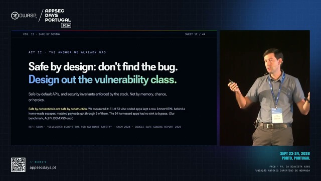

It's Never Been Easier to Write (In)Secure Software: Turning AI, the Fastest Coder, into the Safest
It has never been easier to write insecure software. A rapidly growing share of the world's code is now written by or with LLMs. They have accelerated development enormously, and they cheerfully reproduce every vulnerable pattern learned from decades of insecure code, now at machine speed.
Read full abstract
But it has also never been easier to write secure software.
The very things that make secure-by-design hard for humans make it easy for machines. Safe coding asks developers to change how they work: adopt hardened APIs instead of dangerous ones, accept opinionated frameworks, live with compiler and presubmit enforcement. Human developers push back; LLMs don't. They adapt instantly to constrained, opinionated stacks and can even rewrite incompatible dependencies from scratch. What matters is a secure stack whose invariants are enforced by the foundational building blocks: the browser (strict CSP, Trusted Types), the compiler, and the CI pipeline. Under such enforcement, AI-generated code cannot violate these invariants.
Drawing on a decade of deploying secure-by-design across Google's web ecosystem, where safe coding and web platform enforcement drove down XSS across hundreds of sensitive applications to nearly zero, I'll show why the painful multi-year rollouts of the past can now collapse into weeks or days, and why enforced invariants may soon let us safely reduce the human in the loop, even for security review. I'll also share how Google tackles product security at scale today: agentic vulnerability discovery and patching at machine scale, the Vulnerability Reward Program, and teaching frontier models secure-by-design from the ground up. The same recipe extends far beyond the web: wherever security invariants can be defined and enforced, entire vulnerability classes can be engineered out of existence.
For 25 years, the OWASP community has defined what good looks like. Those definitions are about to become the specification for the machines that write most of our software. AI is already the fastest coder in history. Together, let's make it the safest.